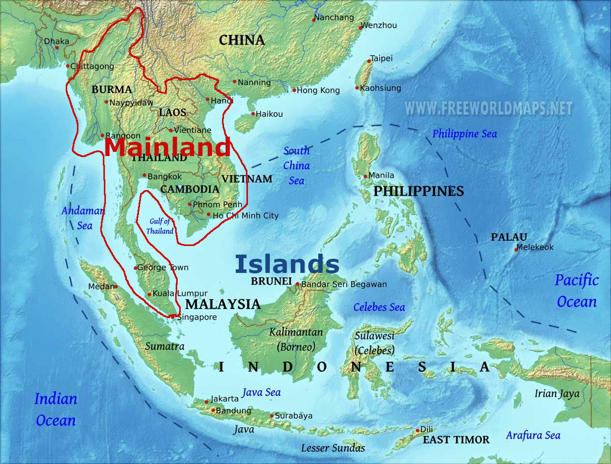
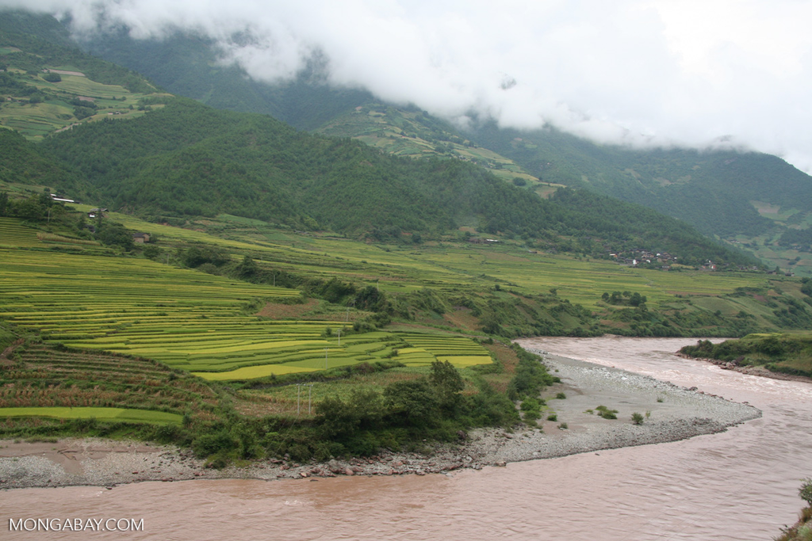

1. Defining South-east Asia as 'ASEAN'
South-east Asia is contemporarily described as the 'Association of South-East Asian Nations'.
- Earliest usage of the term 'South-east Asia: 1839, by an American author in his book,《Travels in South-Eastern Asia》
- Officially used in WWII by the Allies: 《Southeast Asia Command》
{kind=link}
Inaccuracies of using ASEAN to describe 'South-east Asia':
- ASEAN is an organisation and can change in size and scope
- ASEAN does not include Timor-Leste, which is geographically in SEA
2. Defining South-East Asia geographically
{kind=link}
South-east Asia can be geographically divided into 2 parts: main land and islands.
Geographic features of SEA
- Many waterways and seas
- Many islands
Trade and contact within SEA
Ships before the steam era relied heavily on the monsoon season for reliable travel schedules.
- This allowed reliable trade schedules
- This allowed SEA to be a meeting point between traders between India and China
- This brought on the rise of many maritime empires (Thalassocracies)
Notable empires and kingdoms
- Funan (c. 60-500s A.D.)
- Srivijaya (600s-1300s A.D.)
- Majapahit (1200s-1500s A.D.)
Some of these kingdoms would grow to become empires as they expanded.
Insular (Island) South-east Asia
Insular/Maritime South-east Asia is made out of >20,000 islands.
Island countries in South-East Asia
- Singapore
- Brunei
- Malaysia
- Indonesia
- Philipines
- Timor-Leste
Geography
Insular Southeast Asia is surrounded by oceans and seas.
- Oceans, seas and straits provide access to Island South-East Asia
- This shaped travel in the region
- Such vital connections also shape the economy
- The earliest kingdoms and empires in Insular Southeast Asia were formed along important trade routes
Rivers
- Used less for travel as they were relatively shorter
- Rivers are limited to a few regions (such as in Java, Indonesia)
- Provided fertile farmland for large-scale crop cultivation, such as rice
- Future Europeans would be interested in using such fertile land to grow cash crops
Economy
Many states were formed along the coasts of insular Southeast Asia due to the importance of islands and seas.
Characteristics of early South-east Asian economies
- Empires were based on trade
- These states could become very rich and powerful, e.g. Srivijaya
- Oceans and seas provided food, e.g. fish
- Sought-after marine products such as pearls were lucrative trade products
Examples of items traded in Southeast Asia
| Spices | Produce | Pottery |
|---|---|---|
|
|
|
Political Systems
Political characteristics of early political systems in SEA
- Many nation-states without fixed borders
- States were based off the personal authority of their rulers (e.g kings)
- Boundaries were not fixed and could change at any time
(this is understandable if you play civilisation) - Establishment of new villages
- Wars and conquest
Ruling Authority
Rulers were expected to have good characteristics, such as:
- Ability to demonstrate leadership and display charisma
- Military prowess, winning wars
- Making good judgements
- Economy
- Divine stuff, because if your ruler is a god, they can control supernatural effects. (if the rain is shit and all your crops fail, your leader sucks.)
Divine right to rule
Rulers were believed to have divine origins and powers, which is reflected in:
- Religious symbols and special objects dedicated to rulers
- Thrones
- Royal umbrella
- Sacred dagger/sword/other weapon
- Formal rituals (e.g. coronations)
Influence of rulers
Pre-colonial borders were more fluid and constantly changing as different rulers wielded different amounts of power and influence. As such, the size and boundaries of the state would change accordingly.

Areas further from a ruler's main power centre
- Further regions are harder to access and control
- Rulers would have to depend on local chiefs to enforce their order.
- Local 'lower' rulers in peripheral regions would be more independent
- Local chiefs could pledge allegiance to 2 different rulers at any one time
- Local chiefs held the power to ignore their superior and switch allegiance (basically feudalism)
People
Traders from many parts of Asia and the Middle East came to insular South-east Asia to trade due to its openness to trade (the Brits will use this as justification for colonialism somewhere down the line.)
Culture and Religion
The importance of trade resulted in large amounts of social interaction between locals and many different foreign traders.
This caused a spread of different religions in SEA.
Different religions in SEA
- Hinduism: In Java from 8th-9th centuries
Majapahit Empire (13-16th centuries) was a hindu empire - Buddhism: Co-existed with hinduism
- Islam: became the dominant religion in much of Insular Southeast Asia
- Rulers in the Philippines, Malaya and the East Indies converted to boost trade with the Middle East
Despite the spread of other religions, some people never wholly abandoned their beliefs in spirits in animals etc. (Animism)
Mainland South-East Asia
Mainland South-east Asia consists of:
- Myanmar (Burma)
- Thailand (Siam)
- Indochina
- Cambodia
- Laos
- Viet nam
Geography
While Insular South-east Asia has short rivers, Mainland South-east Asia has major rivers, large mountain ranges and
Major rivers in South-East Asia
{kind=link}
- Mekong River – Vietnam, Cambodia, Laos, China
- Chao Praya River – Thailand
- Irawaddy – Myanmar (Burma)
- Red/Hong river – Vietnam, China
The importance of rivers for travel
The many mountains and river deltas made travel across Mainland South-east Asia difficult.
- Major rivers were easier to traverse compared to other terrain.
- Major rivers had large river deltas, which were fertile and provided much food and commercial activity
As a result, many early kingdoms in Mainland South-east Asia were established at such river deltas.
Economies and States
Access to rivers and fertile plains enabled many Mainland Southeast Asian kingdoms to be self-sufficient in food production.
- Rivers like the Mekong were good sources of freshwater fish
- The large deltas of rivers like the Mekong or Irrawaddy were suitable for the cultivation of rice and vegetables.
- Surplus food from fertile plantations allowed more trade between different states
Locally-produced food allowed kingdoms to be situated inland, while trade could be maintained with sea-side and river ports.
{kind=link}
Mainland South-east Asia was not as dependent as Insular South-east Asia on trade. However, the Mekong and Red rivers still served as important trade routes.
- Moving goods along rivers was easier compared to on land, as roads were more difficult to build and traverse.
Political Systems
Like Insular South-east Asia, most kingdoms in Mainland South-east Asia were based on divine kingship and did not have clear borders.
How kingdoms in Mainland SEA justified their rule
- Rulers drew their legitmacy from religion, tradition and personality
- Ability to lead and maintain large governments
- Regulate trade and maintain irrigation
- Military prowess: ability to wage wars and defend their state
Royal Regalia
{kind=link}
Status of royalty, such as coronations and regalia were used to represent the ruler's divine status and a show of their power.
Viet nam
Compared to other parts of South-east Asia, Vietnam had a more uniform political system. Vietnam was under Chinese rule for a long time, so Vietname absorbed many Chinese features of governance, such as:
- More fixed capital cities (places with imperial organs) compared to other Southeast Asian states which moved their capitals frequently
- Adoption of confucianism and imperial examinations
- Adoption of Chinese customs (but with the flavour of vietnam!)
Usage of the mandate of heaven as justification for rule - Categorising their monarchy by the dynastic system (Actually i have no idea what the TB is saying)
People
Mainland South-east Asia is home to a large variety of ethnic groups.
Major ethnic groups in Mainland Southeast Asia
- Tai-Kadai group
- Thai (Tai)
- Lao
- White Tai
- Shan
- Hmong
- Mon-Khmer group
- Khmer (in Cambodia)
- Vietnamese
- Sino-Tibetian group
- Burman (Burmese &c.)
- Karen
- Mon
Populations on the river plains tended to be larger than those of mountainous areas because of the easier access to food and ease of movement and trade.
- In mountainous regions, populations were smaller and more nomadic (hence their widespread distribution today)
Culture and religion
Using religion for political advantages
Many kingdoms in early Mainland SEA adopted foreign religions to their local context, to their advantage.
{kind=link}
The rulers of the Khmer Empire used Buddhism and Hinduism to:
- Justify their power
- Maintain control over the empire
Angkor Wat was built to showcase:
- Showcase the empire's religious origins (it is very useful to justify actions with religion)
- Grand ambitions
- Scale of influence